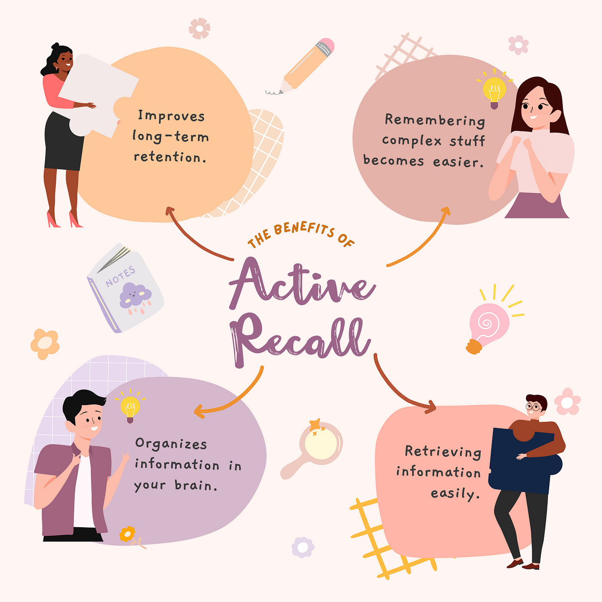
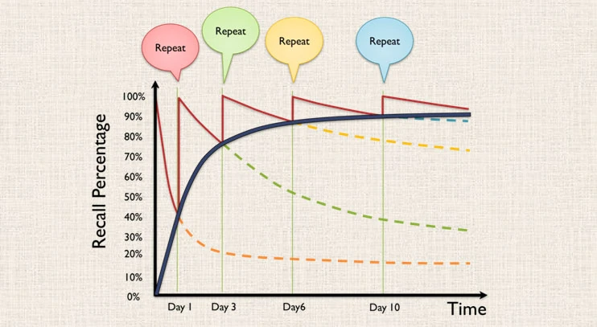
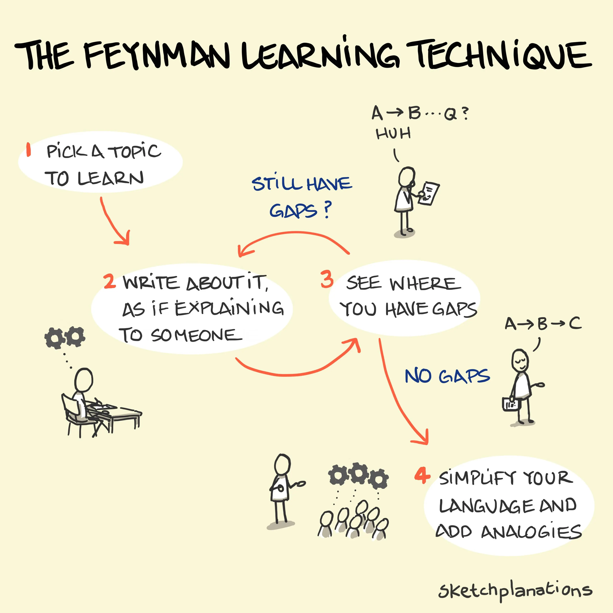
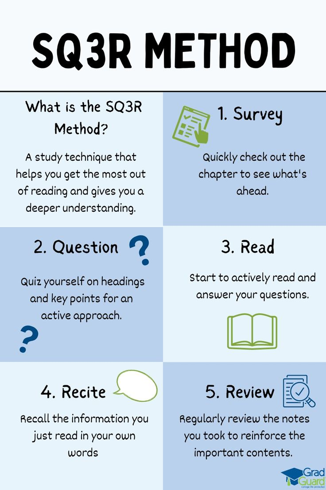
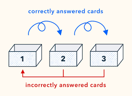

Study Techniques
Effective study techniques can make a huge difference in how well you learn and retain information.
This page covers proven strategies like active recall, spaced repetition, and the Feynman Technique to help you study smarter.
Learn how to apply these methods to boost your focus, comprehension, and memory retention for better academic success.
1. Active Recall
Active recall is a highly effective study technique that involves actively retrieving information from memory rather than passively rereading or highlighting notes.
By testing yourself on what you’ve learned—whether through flashcards, practice questions, or simply trying to recall details without looking at your notes—you strengthen your brain’s ability to retain and take out information over time.
This method forces you and your brain to engage deeply with the material, identify gaps in your understanding, and solidify your knowledge.
Unlike passive studying, which creates the illusion of learning, active recall challenges your brain and builds lasting memory connections.
Simple strategies like self-quizzing, teaching others, or solving problems without assistance make active recall a powerful tool for mastering any subject.

2. Spaced Repetition
Spaced repetition is a proven study technique where you review information at gradually increasing intervals (Such as reviewing after 1 day, then 3 days, then 7 days, and so on.), reinforcing memory just before you’re likely to forget it.
Instead of cramming, this method spaces out learning sessions, allowing your brain to strengthen neural connections over time.
The key idea is to focus more on difficult material while reviewing easier topics less frequently.
This makes learning efficient and ensures long-term retention.
Tools like Anki or Quizlet use algorithms to automate this process, but you can also plan your own schedule by revisiting notes or flashcards over days, weeks, and months.

3. The Feynman Technique
The Feynman Technique is a simple yet powerful method for mastering complex topics by teaching them in plain language.
Named after physicist Richard Feynman, it involves four key steps: First, choose a concept and write it down as if you’re explaining it to someone with no background knowledge. You can even explain it to your plushie or your little sibling or just pretned your a teacher teachign the concept to a 5 year old.
Second, identify any gaps in your understanding when you struggle to explain something clearly.
Third, review the material to fill in those gaps and refine your explanation.
Finally, simplify your explanation even further, avoiding jargon, and use analogies to make it relatable.
By breaking down ideas and teaching them in simple terms, the Feynman Technique helps deepen understanding, identify weaknesses, and solidify knowledge.

4. The SQ3R Method
The SQ3R method is a reading and study technique designed to help you actively engage with and retain information from texts.
It stands for Survey, Question, Read, Recite, and Review. First, Survey the material by skimming headings, subheadings, and summaries to get an overview of the content.
Next, create Questions based on the headings to guide your focus while reading.
Then, Read the text carefully, looking for answers to your questions and key details.
After reading, Recite the main ideas in your own words to ensure you’ve understood the material.
Finally, Review your notes and key points periodically to reinforce what you’ve learned.
By breaking the process into these steps, SQ3R helps improve comprehension, focus, and long-term retention.

5. Leitner System
The Leitner System is a popular method for using flashcards to improve memory retention through spaced repetition.
It works by organizing flashcards into different “boxes” based on how well you know each card.
When you first start, all cards are placed in the first box.
If you answer a card correctly, it moves to the next box, which means you review it less frequently.
If you answer incorrectly, the card goes back to the first box, where it will be reviewed more often.
The idea is that the more you know a card, the less frequently you need to review it, while cards you struggle with are revisited more often to reinforce memory.
Over time, this method helps you focus on areas where you need the most improvement, optimizing your study time.

6. Studying before....bed?
Studying before bed can be an effective technique for memory retention, as your brain processes and consolidates information during sleep. When you study right before sleep, your brain has more time to solidify the material learned, making it easier to recall the next day.
According to Scott Cairney, a researcher from the University of York in the United Kingdom:
“When you are awake, you learn new things, but when you are asleep, you refine them, making it easier to retrieve them and apply them correctly when you need them most.
This is important for how we learn but also for how we might help retain healthy brain functions.”
This works particularly well for subjects that require memorization or deep understanding.
However, it’s important to keep the study session short, focused, and not too overwhelming.
Instead of cramming large amounts of information, review key concepts or use active recall to reinforce what you’ve learned earlier.
Avoid studying right before bed for subjects that require intense focus or problem-solving, as it can lead to mental fatigue.